MAYOR2026.OBSERVE.TW
整理臺北、新北、桃園、臺中、臺南、高雄市長候選人的官方公開發文，跨平台合併時間軸與議題比例。
Six Municipalities
最後更新 2026-08-24 12:01
Latest

@prof.kochihen:昨夜一整晚風雨交加，相信許多高雄人都睡得不安穩。今天一早，我與宋立彬議員、方信淵議員、黃韻涵議員參選人以及典寶里長洪文清，一同前往梓官區 典寶里，關心積淹水及清理情形。 昨天大舍南路、嘉展路一帶淹水嚴重，水深一度達到腰部，許多住戶家中一樓進水，家園幾乎泡在水裡；典寶橋也因而封橋。居民無奈地告訴我，去年才淹過，今年又再淹，同樣的場景再次發生，對居民來說，真的不是一句「暴雨」就能帶過的。 目前部分居民家中積水仍未完全退去，昨天雖然有抽水機持續抽水，但因昨天下午至晚間暴雨不斷，加上滿潮與典寶溪水位高漲，抽水效果有限，直至今日上午水才慢慢退去。 眼前除了持續協調國軍等力量協助居民家園清理，更重要的是不能每次大雨來，就只能等著淹水、清理，年復一年。 我認為典寶里長年的問題，必須從整體排水系統著手，檢討水路分流、箱涵及排水容量、以及排水設施老舊問題，找出有效的改善方案。 治水不能只是淹水後再搶救，而是要把問題一次次找出來、逐步改善，降低居民每逢大雨就提心吊膽的風險。

昨夜一整晚風雨交加，相信許多高雄人都睡得不安穩。今天一早，我與宋立彬議員、方信淵議員、黃韻涵議員參選人以及典寶里長洪文清，一同前往 #梓官區 典寶里，關心積淹水及清理情形。 昨天大舍南路、嘉展路一帶淹水嚴重，水深一度達到腰部，許多住戶家中一樓進水，家園幾乎泡在水裡；典寶橋也因而封橋。居民無奈地告訴我，去年才淹過，今年又再淹，同樣的場景再次發生，對居民來說，真的不是一句「暴雨」就能帶過的。 目前部分居民家中積水仍未完全退去，昨天雖然有抽水機持續抽水，但因昨天下午至晚間暴雨不斷，加上滿潮與典寶溪水位高漲，抽水效果有限，直至今日上午水才慢慢退去。 眼前除了持續協調國軍等力量協助居民家園清理，更重要的是不能每次大雨來，就只能等著淹水、清理，年復一年。 我認為典寶里長年的問題，必須從整體排水系統著手，檢討水路分流、箱涵及排水容量、以及排水設施老舊問題，找出有效的改善方案。 治水不能只是淹水後再搶救，而是要把問題一次次找出來、逐步改善，降低居民每逢大雨就提心吊膽的風險。
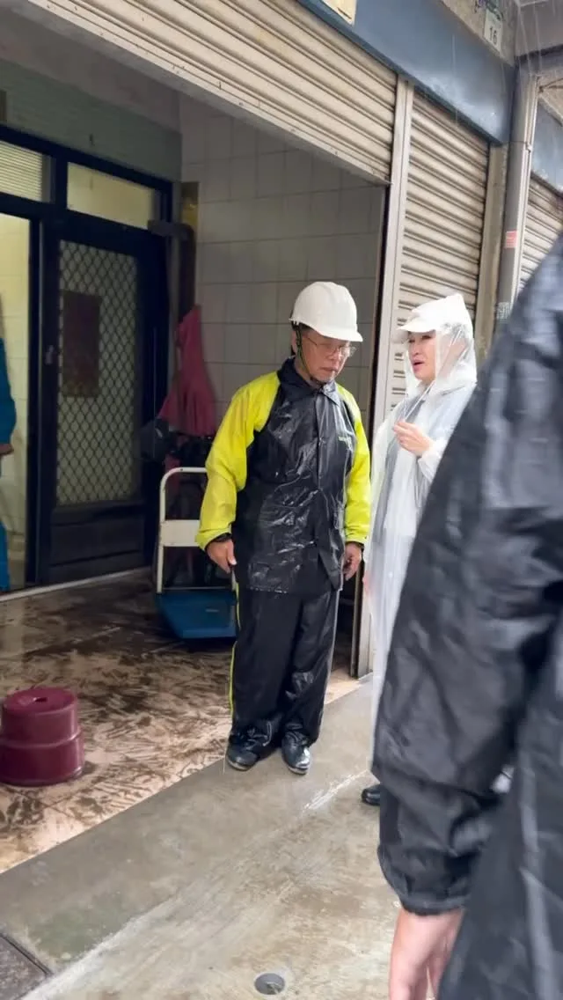
@prof.kochihen:關心梓官典寶橋鄰近居民災後復原狀況。

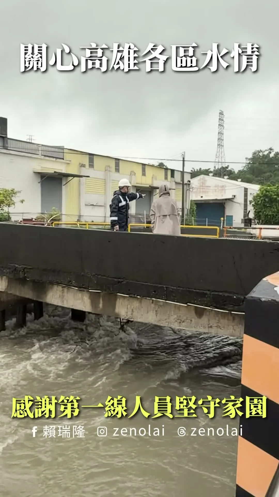
豪大雨期間，防汛工作持續進行，市民朋友也請減少外出、遠離危險水域！
🧨「新聞放鞭炮」直播預告！ 等等8點，世杰將在寶島聯播網接受蔻姐周玉蔻 @coco_aichan 專訪，和大家聊聊桃園的產業、交通、活動，談談為什麼桃園迫切需要一位願意做事、解決問題的市長！ 【直播時間】8/24（一）08:00-08:55 收聽網址放留言，我們在空中不見不散🌶️

@pumashen:看來畫烏龜真的有用！ 這兩天都很順利見到大家～ ⠀ 晚上臨江街夜市很熱情 很多支持者坐在店裡吃飯 在我們經過時 就拿出海報揮手 真的很謝謝你們 ⠀ 有攤商說 這是兩年來人最多的一天 烤玉米老闆也很開心說 今天備料已經賣完 ⠀ 希望這份熱鬧 不只今天 ⠀ 繼續努力！
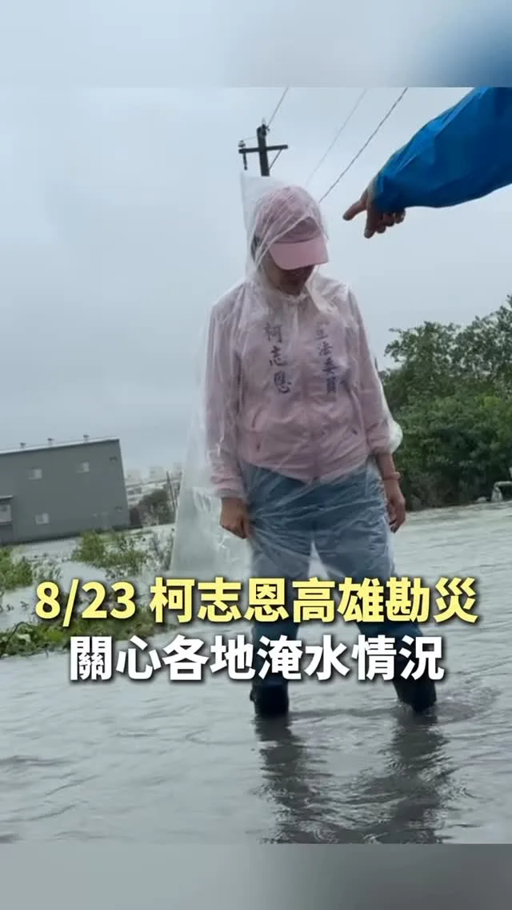
@prof.kochihen:今天一整天，我走進淹水的災區、傾聽鄉親的心聲，並將地方的需求反映給中央、地方政府。 發現問題、討論解方，才能讓淹水不再是高雄人的日常。
@schuanglawyer:週末，世杰跑了11個區，和許多市民面對面互動，每一次見面、每一句交流，我都很珍惜。因為我相信，市民真正的需要，就在大家最真實的生活裡。 想讓更多朋友了解我的理念與政見，沒有捷徑，就是多跑一點、多聊一點、多聽一點。為了桃園，拚就對了！ 最近不少鄉親提醒我，「世杰，你的理念很好，但曝光度還要再衝一下，讓更多人看見！」 大家的期待我都聽到了！改變需要凝聚更多力量，世杰誠摯邀請您一起同行，無論是加入志工、提供看板文宣點位，或用小額捐款支持，都是最重要的力量，詳細資訊放置留言區。請大家成為世杰的小蜜蜂，一起把改變的希望，傳遞到桃園的每一個角落。 下一站，期待在你的生活圈相見，讓我們一起把家變得更好❤️


牙醫界挺巧慧！非常感謝 @taipeishihchung 陳時中政委、@wen_shih_cheng 温世政南投縣長候選人，還有數百位牙醫、牙技、牙材產業好朋友站出來支持我！ 這麼多年來，我們一起在立法院支持醫界，守護國人健康。未來，我也要繼續和大家並肩努力，擴大照顧市民的口腔健康。 ✅ 加強長者牙口與生活照顧 在陳時中政委、阿中部長的建議下，我宣布除了原有政見「長輩假牙補助最高5萬元」，針對中低收入戶及低收入戶長者，要分別加碼提供 #最高8萬元 與 #最高12萬元 補助，讓新北的每一位長輩都活得健康有尊嚴。 ✅ 落實兒童口腔預防醫學 我會將現行0至6歲每半年一次的 #免費塗氟延伸至12歲，從源頭減少小朋友蛀牙的機會，也會推動 #0至6歲門診和住院免部分負擔，減輕家庭壓力。 ✅ 投入資源補缺口、挺專業 為了落實醫療平權、照顧行動不便者，市府會提供獎勵，擴大到宅與到機構的「#居家牙醫服務」，並配合牙技師推動「假牙身分證」，嚴格稽查無照牙技師與非法牙材，支持、保障專業，也守護民眾健康。 倒數97天，做伙拚、做伙贏！一起照顧更多市民朋友！
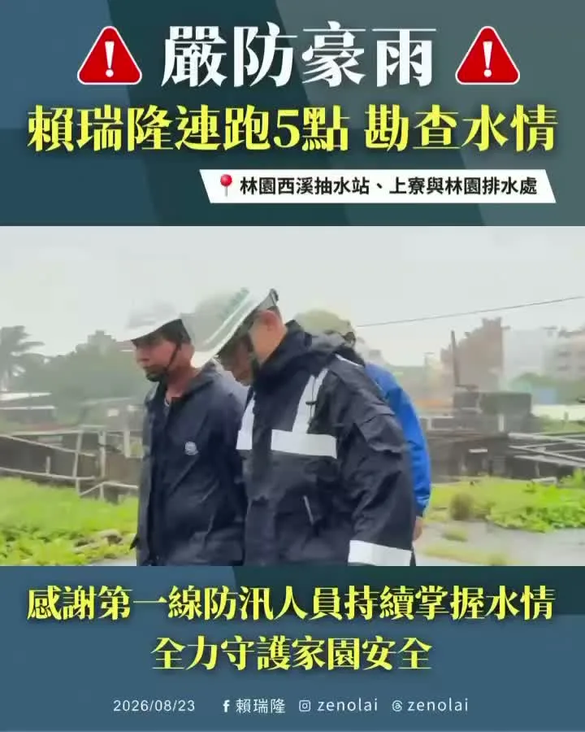
感謝第一線防汛人員，風雨無阻、堅守崗位，我們會繼續為市民安全全力以赴。
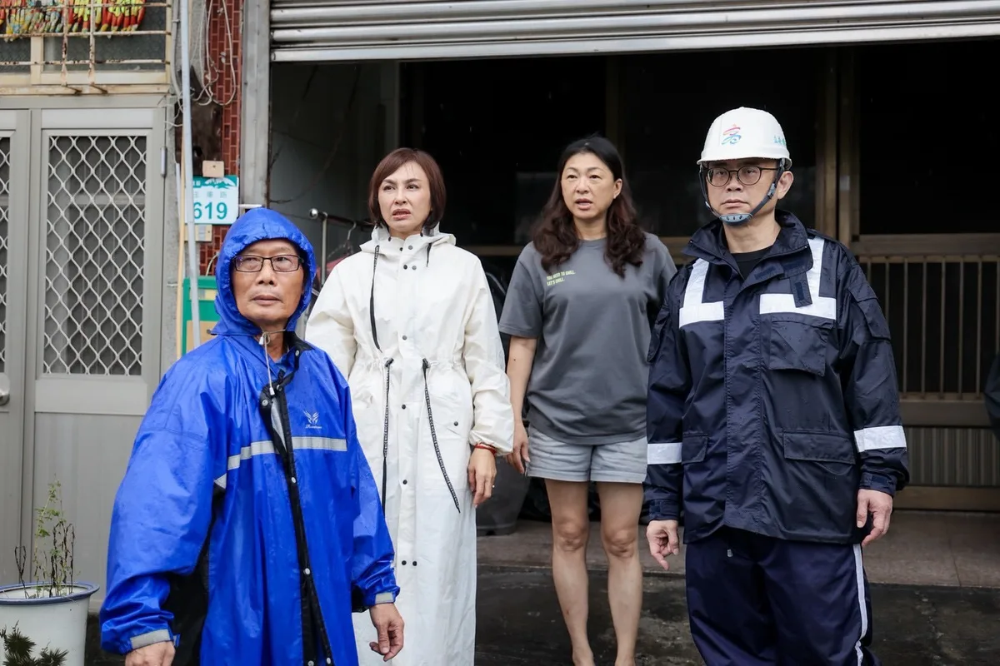
@zenolai:離開田寮後，接著和 @einn.chiu 委員、經濟部 #賴建信 次長來到阿蓮玉庫社區活動中心，聽取地方及鄉親反映，並走進附近家戶，實際了解居民生活受到的影響。 這波強降雨來得又快又集中，我已請相關單位逐戶確認受影響情形，住家排水、環境清理及其他生活需求，都要儘快協助。 市府已調派抽水機加速排水，現有部分設備也要加快汰換。後續我會持續向中央爭取經費及設備，強化地方抽排水能力。
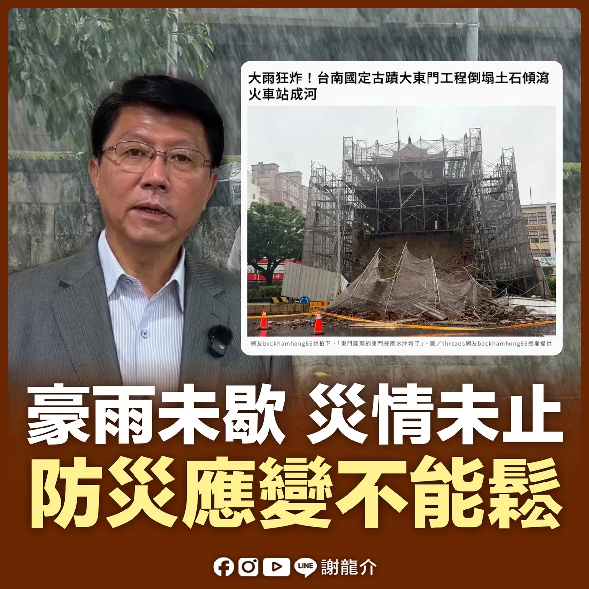
@hsiehlungchieh:台南豪雨持續，龍介向鄉親報告目前災情。 受到低壓帶、熱帶性低氣壓及偏強西南風影響，今天南部地區、台南仍可能有大雨。今天全市停班停課，龍介提醒鄉親，非必要不要外出，盡量待在家中做好防災。 目前掌握狀況： 🔸仁德、永康反覆積淹水 今天清晨大雨再下，仁德、永康多處又出現積水，部分地方「退了又淹」。仁德交流道周邊也受積水影響，低窪地區鄉親務必提高警覺。 🔸台南車站、市區道路積水 昨晚台南車站鐵軌出現明顯積水，市區多處道路這兩天也陸續傳出積水。若有必要外出，一定要先確認道路及交通狀況，不要勉強涉水。 🔸大東門修復工程倒塌 今天清晨，正在修復中的台灣府城大東門受連夜豪雨影響，現場發生土石傾瀉、鷹架倒塌，部分土石散落至東門路，相關單位已進行交通管制及後續處理。 🔸安南區爆炸案持續善後 前幾日海佃路爆炸火警造成多戶民宅受損，如今又遇上連日豪雨，受災鄉親更加辛苦。爆炸原因、廢棄物來源、管理責任，以及居民後續補償與安置。龍介會繼續追下去，該查清楚的不能不了了之。
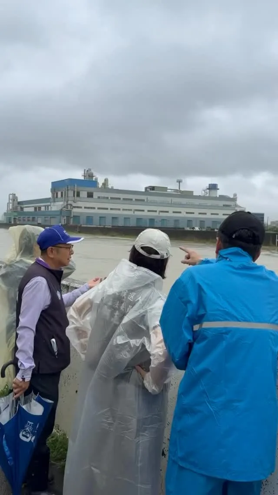
@prof.kochihen:一早持續到各地關心災情及災後復原狀況。豪雨持續、今日高雄停班停課，請大務必注意安全，避免前往危險區域。
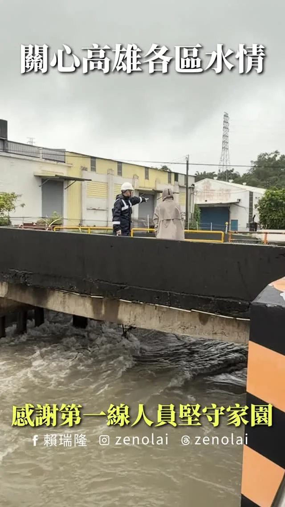
@zenolai:豪大雨期間，防汛工作持續進行，市民朋友也請減少外出、遠離危險水域！

@hsiehlungchieh:⚠️ 因應強降雨及致災風險，明（24）日臺南市停止上班上課⚠️ 龍介提醒大家，密切留意最新天氣與災情資訊，非必要請減少外出！行車也請減速慢行，注意積淹水路段，多一分防範、多一分安全！
@zenolai:小港火警空品提醒！小港、大寮、鳳山、鳥松朋友請留意防護 小港區稍早發生工廠火警，消防單位正持續搶救中。預估空氣品質受影響的區域，已擴大至小港區、大寮區、鳳山區和鳥松區。 環保局正持續嚴密監測空品變化，請上述區域的市民朋友盡量待在室內、緊閉門窗，如需外出請務必戴好口罩。我會持續緊盯後續處置狀況，請大家務必注意防護和安全。高雄平安！
國際油價上漲！持續專案平穩 中油公布8/24-8/30汽、柴油價格維持不調整 〈 國際油價上漲！持續專案平穩 中油公布8/24-8/30汽、柴油價格維持不調整 〉本文來自於《 龍傳媒新聞 iNews Long 》。 台灣中油公司（8／22）日宣布，自下週一(24日)凌晨零時起至8月30日晚上12時止，汽、柴油價格維持...
@prof.kochihen:大寮永芳里淹成一片汪洋，我將向中央農田水利署反映問題，也請大寮的議員團隊向高雄市水利局了解情況。 針對農田、農路，以及周邊水路系統找出問題、提出解決方案，讓淹水不再成為大寮人的日常。
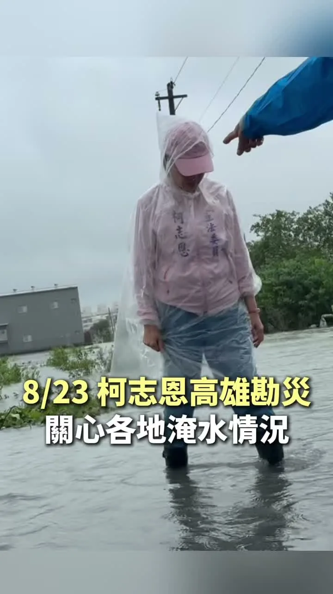
今天一整天，我走進淹水的災區、傾聽鄉親的心聲，並將地方的需求反映給中央、地方政府。 發現問題、討論解方，才能讓淹水不再是高雄人的日常。
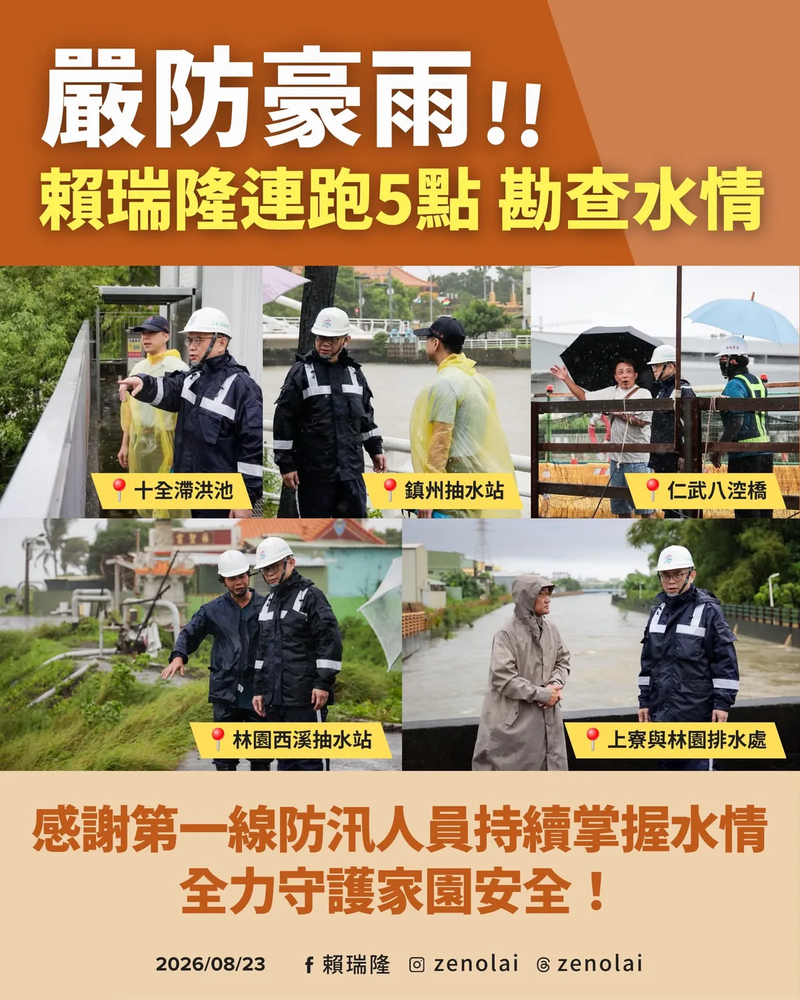
@zenolai:感謝第一線防汛人員，風雨無阻、堅守崗位，我們會繼續為市民安全全力以赴。

阿純盲測辣椒醬！竟然「全！部！猜！對！」🌶️
台南豪雨持續，龍介向鄉親報告目前災情。 受到低壓帶、熱帶性低氣壓及偏強西南風影響，今天南部地區、台南仍可能有大雨。今天全市停班停課，龍介提醒鄉親，非必要不要外出，盡量待在家中做好防災。 目前掌握狀況： 🔸仁德、永康反覆積淹水 今天清晨大雨再下，仁德、永康多處又出現積水，部分地方「退了又淹」。仁德交流道周邊也受積水影響，低窪地區鄉親務必提高警覺。 🔸台南車站、市區道路積水 昨晚台南車站鐵軌出現明顯積水，市區多處道路這兩天也陸續傳出積水。若有必要外出，一定要先確認道路及交通狀況，不要勉強涉水。 🔸大東門修復工程倒塌 今天清晨，正在修復中的台灣府城大東門受連夜豪雨影響，現場發生土石傾瀉、鷹架倒塌，部分土石散落至東門路，相關單位已進行交通管制及後續處理。 🔸安南區爆炸案持續善後 前幾日海佃路爆炸火警造成多戶民宅受損，如今又遇上連日豪雨，受災鄉親更加辛苦。爆炸原因、廢棄物來源、管理責任，以及居民後續補償與安置。龍介會繼續追下去，該查清楚的不能不了了之。 龍介也要提醒市府，雨勢還沒停，低窪地區、易淹水熱點、地下道及重要道路，都要持續巡查；抽水機、抽水站及排水系統要隨時正常運作，一旦有危險，就要及早封路、及早疏散。 家中有長輩、幼童、行動不便者，以及這幾天已經受災的民眾，市府也要主動掌握需求，安置、物資、清理及後續協助都要跟上。現在最重要的，就是把每一位鄉親顧好，把災害降到最低。 龍介和團隊成員，以及國民黨台南市議員夥伴，也會持續掌握各區災情、協助鄉親反映需求，有需要幫忙的地方，我們一定盡力處理。 今天雨勢仍可能持續，鄉親不要掉以輕心。既然已經停班停課，非必要不要出門，彼此多一分照應，大家平安度過這波豪雨。
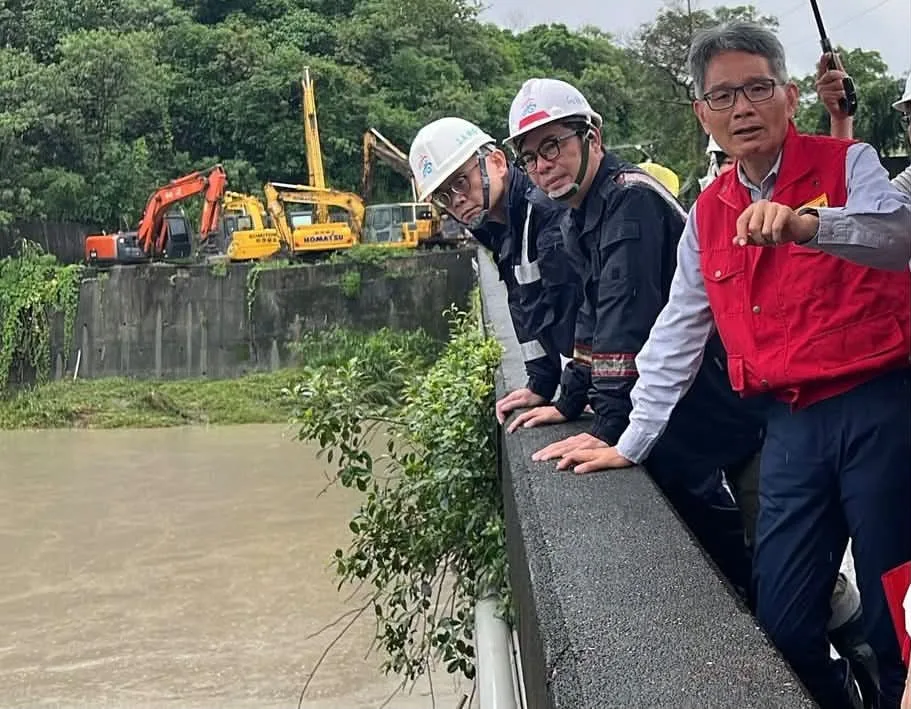
@zenolai:一早和 @chenchimai 市長、@einn.chiu 委員、經濟部 #賴建信 次長到田寮月世界，查看周邊道路、步道、邊坡及排水狀況。 至昨日高雄的累積雨量已超過500毫米，已達超大豪雨等級，到今天中午前也預計都會有超過250毫米的預估雨量。 月世界又屬於泥岩地形，長時間受到雨水沖刷，容易造成土石鬆動、落石，影響道路通行。現場需要清理、修復或補強的地方，已請公路局及市府等相關單位儘速處理，降低後續降雨可能帶來的風險。 這波雨勢仍未結束，請市民朋友暫時避免前往山區，路上行駛也請放慢速度，留意落石、坍方及現場管制。
@schuanglawyer:🧨「新聞放鞭炮」直播預告！ 等等8點，世杰將在寶島聯播網接受蔻姐周玉蔻 @coco_aichan 專訪，和大家聊聊桃園的產業、交通、活動，談談為什麼桃園迫切需要一位願意做事、解決問題的市長！ 【直播時間】8/24（一）08:00-08:55 收聽網址放留言，我們在空中不見不散🌶️
⚠️ 因應強降雨及致災風險，明（24）日臺南市停止上班上課⚠️ 龍介提醒大家，密切留意最新天氣與災情資訊，非必要請減少外出！行車也請減速慢行，注意積淹水路段，多一分防範、多一分安全！


@a_chun1973:捷運藍線進太平 全速推動！💪💪
@su.chiaohui:牙醫界挺巧慧！非常感謝 @taipeishihchung 陳時中政委、@wen_shih_cheng 温世政南投縣長候選人，還有數百位牙醫、牙技、牙材產業好朋友站出來支持我！ 這麼多年來，我們一起在立法院支持醫界，守護國人健康。未來，我也要繼續和大家並肩努力，擴大照顧市民的口腔健康❤️
週末，世杰跑了11個區，和許多市民面對面互動，每一次見面、每一句交流，我都很珍惜。因為我相信，市民真正的需要，就在大家最真實的生活裡。 想讓更多朋友了解我的理念與政見，沒有捷徑，就是多跑一點、多聊一點、多聽一點。為了桃園，拚就對了！ 最近不少鄉親提醒我，「世杰，你的理念很好，但曝光度還要再衝一下，讓更多人看見！」 大家的期待我都聽到了！改變需要凝聚更多力量，世杰誠摯邀請您一起同行，無論是加入志工、提供看板文宣點位，或用小額捐款支持，都是最重要的力量，詳細資訊放置留言區。請大家成為世杰的小蜜蜂，一起把改變的希望，傳遞到桃園的每一個角落。 下一站，期待在你的生活圈相見，讓我們一起把家變得更好❤️


當打水仗沒人要跟你一隊😂 昨天來到張斯綱議員 @csktaiwan 的夏日勁涼派對，大朋友、小朋友全部玩瘋了！ 現場也遇到很多爸爸媽媽，大家一起陪孩子玩水、聊聊育兒日常，每一個家庭的分享，都是我們持續努力、打造臺北成為育兒友善城市的重要參考！

台南明（8/24）日再度停止上班、停止上課。 連日豪雨，台南多處積淹水，接下來仍可能有大雨、局部豪雨及短延時強降雨。 提醒大家，明天如果非必要請盡量避免外出，遠離積淹水及危險區域，也請大家做好防雨、防淹水準備。 目前最重要的，就是守護大家的安全，也一起努力讓受災的家園盡快恢復。 天雨路滑，大家平安最重要！ #陳亭妃 #台南